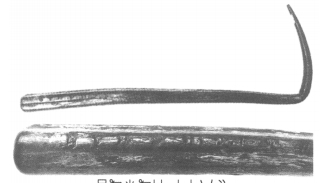
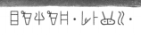

-
ARKHZf9
Names
ARKHZf9, ARKH Zf9
Support
Metal object
Location
Arkhalkhori
Findspot
Unavailable


Scribe
Unavailable
Context
Late Minoan I
1600-1450 BCE
Dimensions
Catalogue
Readings
1 1 0 JA none
1 1 0 KI none
1 1 0 SI none
1 1 0 KI none
1 1 0 NU none
1 1 1 *900 none
1 1 2 MI none
1 1 2 DA none
1 1 2 MA none
1 1 2 RA₂ none
1 1 3 *900 none
𐘱𐘸𐘤𐘸𐘯𐄁𐘻𐘀𐙁𐘽𐄁
JAKISIKINU*900MIDAMARA₂*900
𐘱𐘸𐘤𐘸𐘯𐄁𐘻𐘀𐙁𐘽𐄁
JAKISIKINU*900MIDAMARA₂*900
ARKH Zf 9
(HM ;
Sakellarakis & Sakellarakis 1997, 1:
169-179 (especially
174-179),
332-333, fig. 296; J.-P. Olivier forthcoming. Silver hairpin
from the
pillar
room of Tholos B, mixed MM I-LM I context. Sakellarakis &
Sakellarakis
give some information about the context; Olivier has
graciously provided
information about the inscription in advance of the
publication of
"Rapport."
JA-KI-SI-KI-NU •
MI-DA-MA-RA
2
•
For
JA-KI-SI-KI-NU, cf. QA-KI-SE-NU-TI
(CR (?) Zf 1), SI-KI-
NE
(HT
116a.5-6), and
A-DA-KI-SI-KA (KH 5.1).
ARMENOI
Commentary © John Younger
References